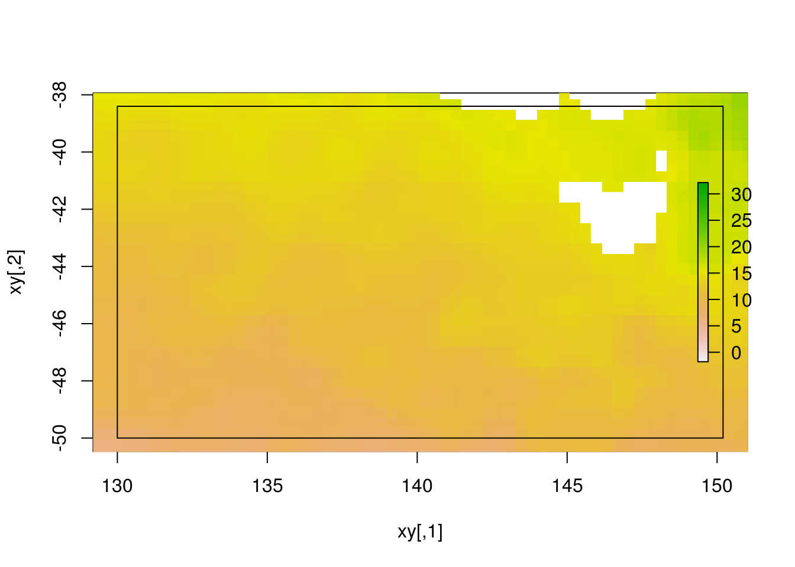

TODO: include some of this old crusty https://gis.stackexchange.com/a/43760/1204
What is a raster?
Is it an image, a surface, a matrix, an array, a map, pixellated coverage, a discretization of the plane, a georeferenced grid? Which of these is most accurate? (Let’s not get stuck here - the fact is that it depends).
What a raster is depends a lot on on what you are doing with the data, and what you need from it. All and none of these descriptions might make sense, but I want to completely put that topic aside so it doesn’t get in our way.
The raster package in R has a very strong cell-based index abstraction that is very useful for dealing with gridded data. This is extremely powerful, but in its current form is not easily separated from the very powerful high-level functionality of the raster package. I believe that very few people really grasp this distinction, and I contend that much benefit in efficiency of computation and understanding is missed because of this.
This document aims to explain why that abstraction is very useful, and worth the effort to separate it from the specific workflows enabled by the raster package.
Rasters are used in many places in R, and their support has been very good from the earliest versions of R, though there have been many somewhat obscure improvements in how they can be handled, and the topic is now very much obscured by the complicated history of their existence in R, and their use in very many packages in different ways. The possibilities for what a raster is and what it can be is not a finished story.
A fairly straightforward use of the raster package is to extract values from cells (a.k.a. pixels). These values might be data, like a unit-measure quantity such as temperature in Celsius stored as a floating point number, or a more abstract depiction of data converted to a relative scale, such as grey-scale or Red-Green-Blue (RGB, or BGR). Put the colour-model variety aside for now, it adds another level of complication to the story that we don’t need right now.
Here is a set of files containing ocean surface temperature (SST). This won’t work on your local system, but it’s a set of files somewhere that R can see. (Our system is set up to provide very easy access to these kinds of files - to download these exact files or to emulate our system see the section below. )
files <- raadtools::sstfiles()$file[13051:13062]
root <- getOption("raadfiles.default.data.directory")
print(basename(files))## [1] "avhrr-only-v2.20170525.nc" "avhrr-only-v2.20170526.nc"
## [3] "avhrr-only-v2.20170527.nc" "avhrr-only-v2.20170528.nc"
## [5] "avhrr-only-v2.20170529.nc" "avhrr-only-v2.20170530.nc"
## [7] "avhrr-only-v2.20170531.nc" "avhrr-only-v2.20170601.nc"
## [9] "avhrr-only-v2.20170602.nc" "avhrr-only-v2.20170603.nc"
## [11] "avhrr-only-v2.20170604.nc" "avhrr-only-v2.20170605.nc"A typical requirement from these data is to extract values from local sub-region/s and summarize. A sub-region might be an extent (bounding box in the coordinate system of the data), a set of point/s, a set of line/s or polygon/s. Each of these types of sub-regions is a query of the underlying gridded data.
(For now we ignore cases of varying query-in-time, continuous interpretation of cell values, and weighted or partial cell-coverage - these are specializations that build on lower level functionality of the simpler cases).
I’ve chosen two cases to illustrate, one with a single extent and another of two simple polygonal regions. For checking the context in which these queries will be built, first interrogate the data for the basic metadata. (I’m using ‘readAll’ simply to hide the full file path, it’s unnecessary in the usual case).
library(raster)## Loading required package: sp## Warning in .varName(nc, varname, warn = warn): varname used is: sst
## If that is not correct, you can set it to one of: sst, anom, err, ice## class : RasterLayer
## dimensions : 720, 1440, 1036800 (nrow, ncol, ncell)
## resolution : 0.25, 0.25 (x, y)
## extent : 0, 360, -90, 90 (xmin, xmax, ymin, ymax)
## coord. ref. : +proj=longlat +datum=WGS84 +ellps=WGS84 +towgs84=0,0,0
## data source : in memory
## names : Daily.sea.surface.temperature
## values : -1.8, 32.14 (min, max)
## z-value : 2017-05-25
## zvar : sst
## level : 1In this case the interpretation of the underlying grid logic is sound, though in many cases this process needs some investigation and slight re-interpretation (to account for cell-centre vs. cell-edge alignment, incomplete coordinate reference system CRS or other incomplete or inaccurate interpretations.) There’s no way to automate every possible case, these tools exist in a complex environment and not every situation can be handled without human oversight. Other options might need to restructure the data into Atlantic view with longitudes in -180, 180 but this Pacific view with longitudes 0, 360 is fairly common, and sometimes required, and neither case is inherently better or worse.
What is an extent? For raster it is a set of four numbers, xmin, xmax, ymin and ymax and there are simple idioms for creating these. An Extent is a formal class that many raster operations formally understand, but at root it’s just these four numbers. The magic of R functions for formal classes provides all the convenient behaviour to allow this to act like a rectangular polygon.
Let’s build one, here using longitude latitude values local to my part of the world.
library(raster)
ex <- extent(c(xmin = 130, xmax = 150.2, ymin = -50, ymax = -38.4))We use this extent to conveniently hone in on just a small region of the global raster data. Here I really don’t care about any interpretation of the data, it’s just an illustration of the mechanics available to us. (Once we have mastery of these mechanics, and hopefully access to the best possible techniques then we can get back to the actual work of interpreting and using these data and honing our visualizations and analysis).
This is very nice, but note how the extent we asked for is not applied to the data we end up seeing in the plot.
rdata <- raster(file.path(root, files[1]))## Warning in .varName(nc, varname, warn = warn): varname used is: sst
## If that is not correct, you can set it to one of: sst, anom, err, iceplot(ex) ## the extent sets the plot context first
plot(rdata, add = TRUE)
plot(ex, add = TRUE) ## put the extent layer on top
We haven’t actually cropped the data at all, it has been visually truncated by the graphics device, and it’s clear that the scale shows a range of data much wider than we see in this window. So it’s accurate, given that the data is global, but maybe not what we wanted.
Let’s crop the data.
rdata_local <- crop(rdata, ex)
print(rdata_local)## class : RasterLayer
## dimensions : 46, 81, 3726 (nrow, ncol, ncell)
## resolution : 0.25, 0.25 (x, y)
## extent : 130, 150.25, -50, -38.5 (xmin, xmax, ymin, ymax)
## coord. ref. : +proj=longlat +datum=WGS84 +ellps=WGS84 +towgs84=0,0,0
## data source : in memory
## names : Daily.sea.surface.temperature
## values : 6.41, 19.04 (min, max)
## time : 2017-05-25We now have a copy of the sub-region we were after, and it’s time to notice another key feature. The extent we cropped with is not the extent of the result, because the data itself has an underlying grain and alignment (here it’s a grain/resolution of 0.25 in both directions, and cells are aligned to chunks at 0.25 spacing from 0. Alignment is just as important as resolution, since it could have have started aligned somewhere like 0.1, not necessarily matching the resolution in whole pieces relative to 0).
We can see the difference if we crop with snap = “out”. It’s still not the same extent we asked for, but it’s more inclusive (and I wish it was the default). Note that we cannot crop a raster to an exact extent if it’s not already aligned, but that’s the nature of gridded data. We would have to remodel and restructure the data to get a new grain and alighnment, and that’s a perfectly valid workflow but it’s a relatively big commitment since it modifies the data and commits us to a new structure, so it involves interpretation in all aspects of the work.
crop(rdata, ex, snap = "out")## class : RasterLayer
## dimensions : 47, 81, 3807 (nrow, ncol, ncell)
## resolution : 0.25, 0.25 (x, y)
## extent : 130, 150.25, -50, -38.25 (xmin, xmax, ymin, ymax)
## coord. ref. : +proj=longlat +datum=WGS84 +ellps=WGS84 +towgs84=0,0,0
## data source : in memory
## names : Daily.sea.surface.temperature
## values : 6.41, 19.04 (min, max)
## time : 2017-05-25